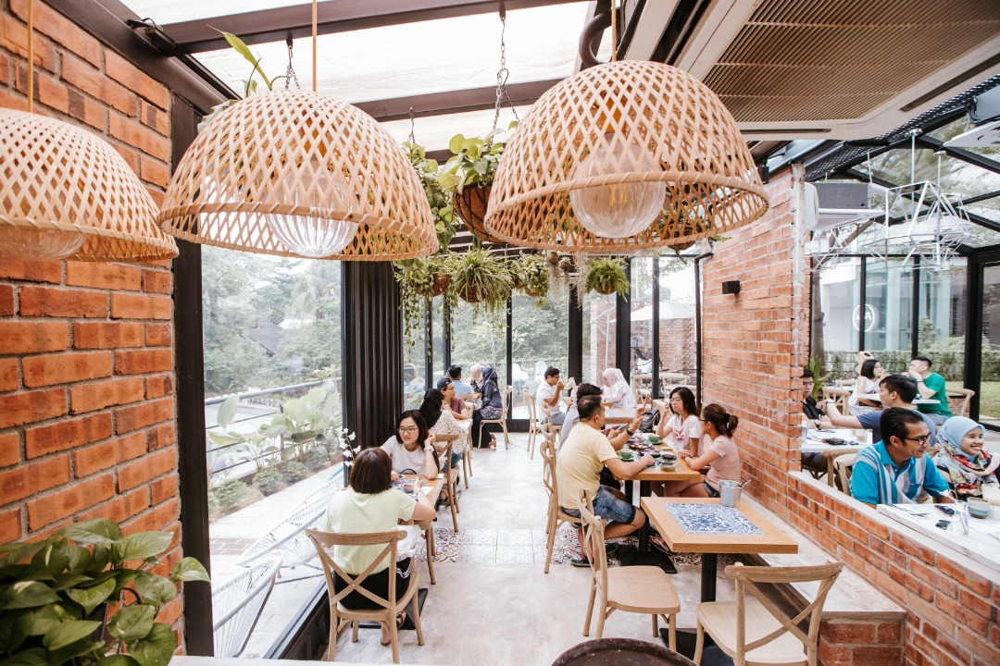
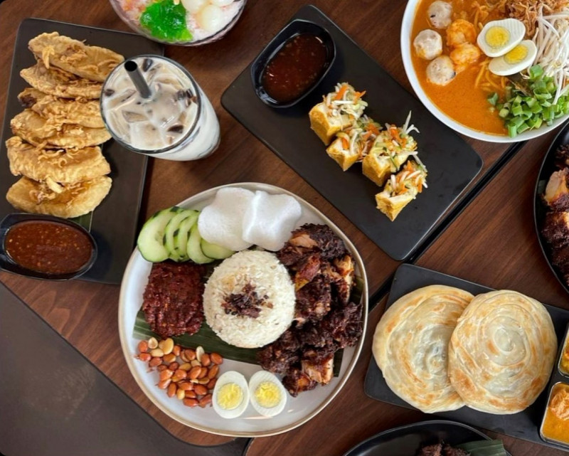
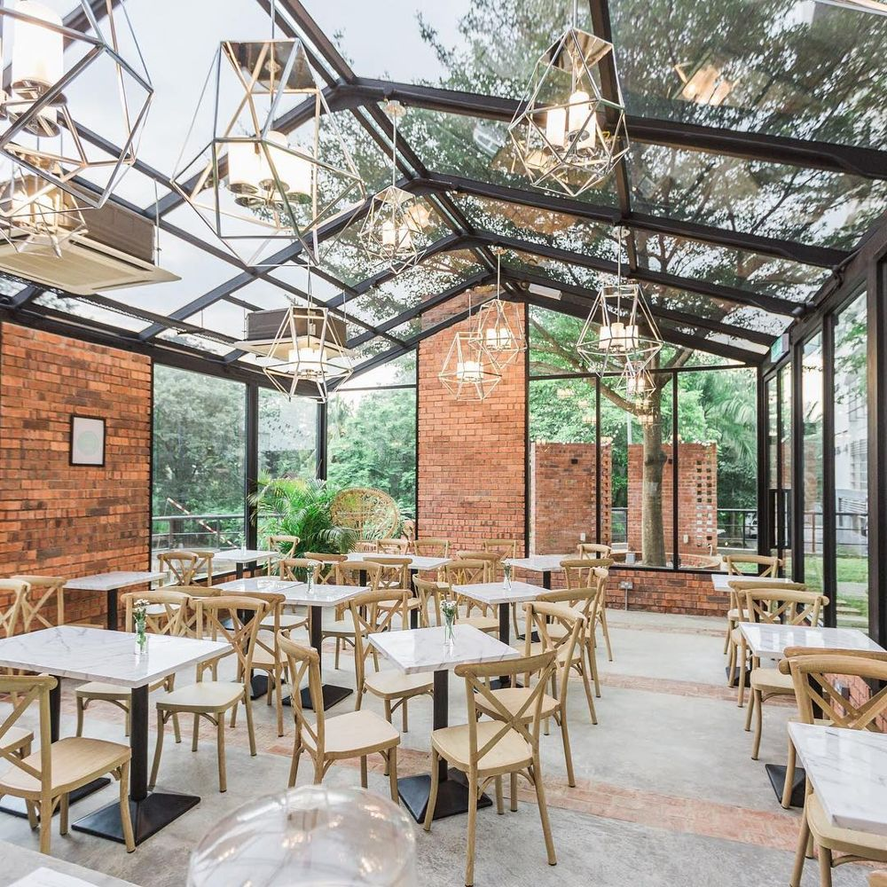
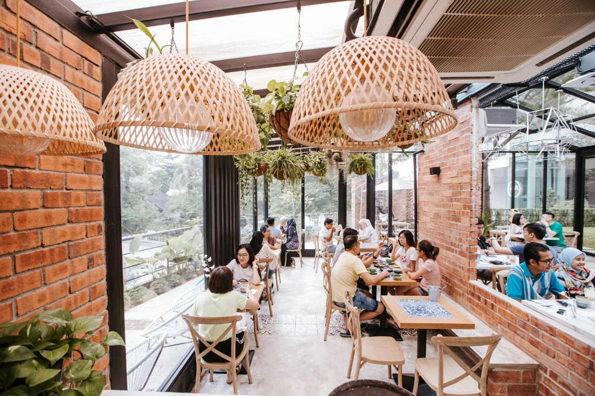
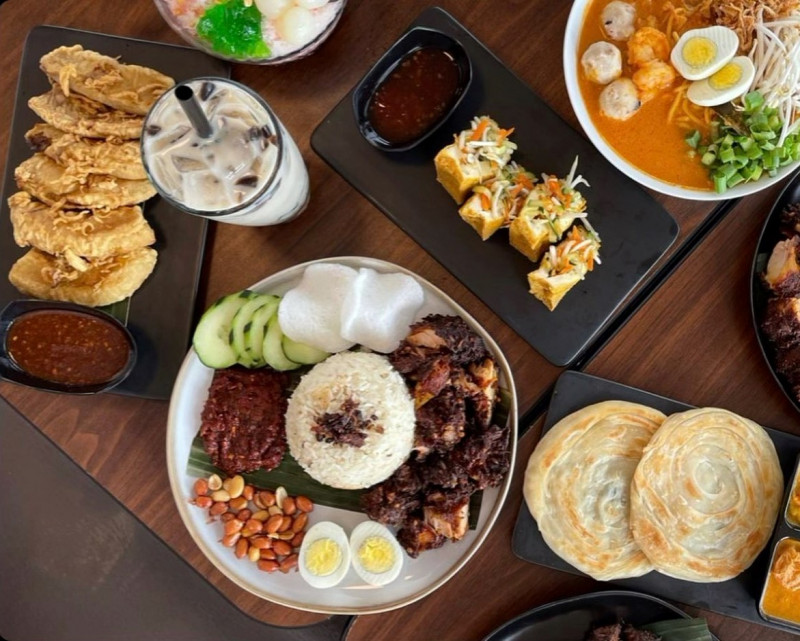
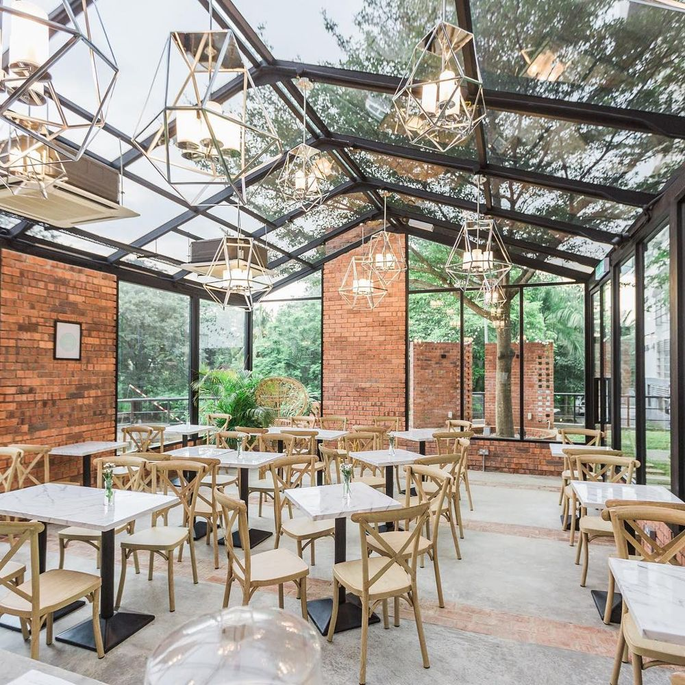

First and foremost I want to introduce my self. My name is Nor Aisyah Binti Kamarudin. As you know I'm 21
years old and I was born at Pahang.When talk about Family I have 8 siblings obviously I'm the last one.
I would describe myself as being ambivert that has balance of extrovert and introvert, sometimes it depands
on situation. I'm also independent and dislike working in group,unless they're have responsibility of being
group members.I generally like to do things on my own. I'm pretty calm in most situations and good in control my stress.My
objective is make changes in my life so that I can be better, normally bad experience give lesson to be
better.In order to have great life in the future,I have to be grateful,loving and be more eviden every day also feel
increasingly more accountable for my action.
My hobby of food hunting extends beyond the ordinary, as I relish the thrill of discovering and
tasting new things.
Whether it's uncovering hidden gems in local neighborhoods or indulging in the offerings of renowned
eateries, I find joy in every food hunting adventure.
Food hunting, for me, is not just a hobby; it's a continuous exploration of tastes, textures, and
culinary stories. It's a journey that brings joy, excitement,
and a deeper appreciation for the rich tapestry of flavors that our world has to offer.
I also enjoy immersing myself in the fascinating stories that dramas and novels offer. I love discovering new stories, whether they are on the screen or in the books. They give me a lot of pleasure and satisfaction. I like finding hidden treasures in the world of TV shows or exploring the amazing worlds of famous literary works. Every time I watch a drama or read a novel, I feel very happy.
For me, watching dramas and reading novels is not just a hobby; it is a way of exploring different plots, characters, and ways of telling stories. This journey brings me joy, excitement, and a deeper appreciation for the complex and beautiful narratives that the fields of entertainment and literature have to offer


